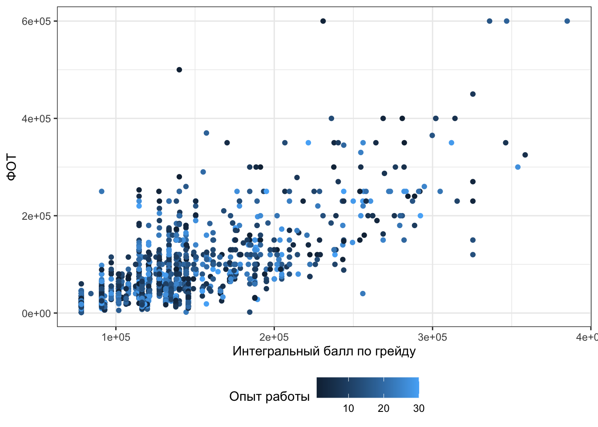
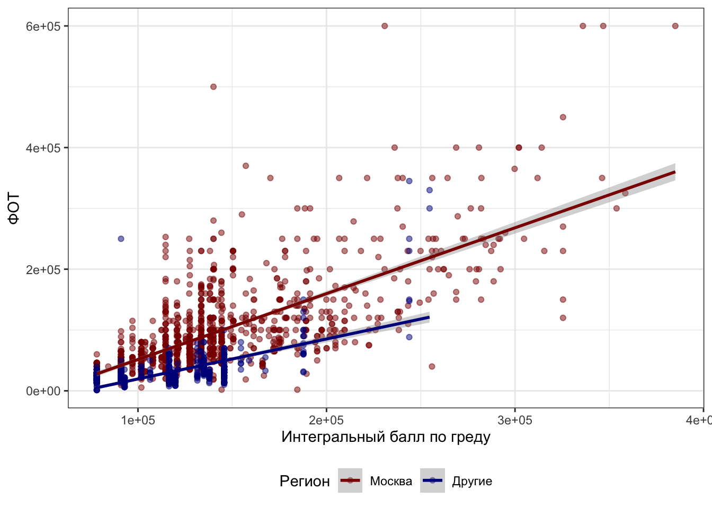

15 Множественная линейная регрессия
15.1 Связи между несколькими переменными
Как мы отметили в конце прошлог главы, корреляция позволяет изучать взаимосвязи только между двумя переменными. А если у нас больше двух?
Будем работать с теми же данными про сотрудников и деньги. Мы уже изучили связь между грейдом и оплатой труда. Но в наших данных есть еще одна количественная переменная — experience (опыт работы в годах). Как бы нам так исхитриться и посмотреть связь ФОТ (фонда оплаты труда) и с грейдом, и с опытом работы.
Отметим вот что: визуализировать связь между тремя количественными переменными проблематично — придется выходить в 3D, чтобы расположить наши переменные по трём осям. Но можно немного пошуршать и изобразить, например, такое:

Не то чтобы прям супер визуализация, но три количественные переменные на плоскости — креативно.
Но ладно, признаем, что нарисовать оптимальную визуализацию не всегда удается, а моделировать всё равно надо. Будем разбираться, как это делать.
15.2 Множественная линейная регрессия с количественными предикторами
В общем-то с моделью происходит не то чтобы что-то невероятное — раз у нас еще один предиктор, значим нам нужно еще одно слагаемое. Ну, добавим.
\[ \hat y = b_0 + b_1 x_1 + b_2 x_2 \]
В общем случае мы можем добавить столько предикторов, сколько надо. Однако чтоит помнить, что чем сложнее модель, тем больше данных нам нужно, чтобы её корректно построить.
Ну и вот. Всё. Чё тут еще беседовать.
Формулы для коэффициентов обсуждать не будем, потому что ими все равно никто не пользуется.
Однако в случае множественной линейной регрессии может возникнуть одна неприятная проблема.
15.2.1 Проблема мультиколлинеарности
Предикторы могут быть связаны не только с целевой перемненой, но и друг с другом, что обуславливает проблему мультиколлинеарности.
В чем она заключается? Подробно, к сожалению, вникнуть не сможем, потому что для этого требуется некоторая прошаренность в линейной алгебре.
Я обладаю некоторой прошаренностью в линале
Вспомним, что имеющуюся у нас модель мы можем переписать в следующем виде:
\[ \boldsymbol{y}= \boldsymbol{X}\boldsymbol{b}+ \boldsymbol{e}, \]
где \(\boldsymbol{y}\) — вектор нашей зависимой переменной, \(\boldsymbol{X}\) — матрица независимых переменных, \(\boldsymbol{b}\) — вектор коэффициентов модели, \(\boldsymbol{e}\) — вектор ошибок (остатков) модели.
Может возникнуть резонный вопрос: почему ничего не изменилось, ведь у нас теперь множествення линейная регрессия?
Все просто: матрица \(\boldsymbol{X}\) теперь состоит больше, чем из двух столбцов, а вектор \(\boldsymbol{b}\) — больше, чем из двух элементов:
\[ \boldsymbol{X}= \begin{pmatrix} 1 & x_{11} & \dots & x_{1p} \\ 1 & x_{21} & \dots & x_{2p} \\ 1 & x_{31} & \dots & x_{3p}\\ \vdots & \vdots & \ddots & \vdots \\ 1 & x_{n1} & \dots & x_{np} \end{pmatrix}; \quad \boldsymbol{b}= \begin{pmatrix} b_0 & b_1 \dots b_p \end{pmatrix} \]
Матричное решение для коэффициентов модели совершенно идентично случаю простой линейной регрессии:
\[ \boldsymbol{b}= (\boldsymbol{X}^\mathrm{T}\boldsymbol{X})^{-1}\boldsymbol{X}^\mathrm{T}\boldsymbol{y} \]
Посмотрим внимательно на формулу выше: в ходе вычислений мы берем обратную матрицу. Если наши предикторы сильно коррелируют друг с другом (\(\geq 0.8\)), то в нашей матрице возникают линейно зависимые столбцы, а значит обратная матрица не будет существовать.Если просто, то сильно коррелирующие друг с другом предикторы — это плохо.
В случае абсолютно линейной связи коэффициент модели просто не вычислится. Как правило, это намёк на то, чтобы проверить данные — возможно, у вас есть одна и та же переменная, записанная по-разному (например, рост в метрах и сантиметрах). В случае высоких (но меньших единицы) корреляций проблема подбора коэффициентов решается с помощью методов численной оптимизации1, однако это может приводить к смещённым оценкам коэффициентов модели, а также большим ошибкам в оценках коэффициентов.
Поэтому с мультиколлинеарностью надо бороться. Вариантов существует много. Наиболее часто используемые: исключение коллинеарных переменных из модели, метод служебной регресии, методы уменьшения размерности (кластерный анализ, PCA и др.).
15.2.2 Результаты множественной линейной регрессии
Как вы могли догадаться по опыту дисперсионного анализа, таблица результатов изменится не сильно.
##
## Call:
## lm(formula = fot ~ grade_score + experience, data = ds)
##
## Residuals:
## Min 1Q Median 3Q Max
## -171378 -28599 -3321 15681 418200
##
## Coefficients:
## Estimate Std. Error t value Pr(>|t|)
## (Intercept) -7.443e+04 3.862e+03 -19.27 <2e-16 ***
## grade_score 1.118e+00 2.433e-02 45.97 <2e-16 ***
## experience -2.564e+01 1.224e+02 -0.21 0.834
## ---
## Signif. codes: 0 '***' 0.001 '**' 0.01 '*' 0.05 '.' 0.1 ' ' 1
##
## Residual standard error: 47460 on 1992 degrees of freedom
## Multiple R-squared: 0.5147, Adjusted R-squared: 0.5142
## F-statistic: 1056 on 2 and 1992 DF, p-value: < 2.2e-16У нас добавилась ещё одна строка таблицы для переменной experience. Аутпут, как и в случае простой линейной регрессии, читаем снизу вверх.
Модель в целом статистически значима (F(2, 1992) = 1057, p < .001) и объясняет 51% дисперсии данных. Интегральный балл по грейду (grade_score) также статистически значим. Опыт работы (experience) не связан статистически значимо с целевой переменной.
15.2.3 Скорректированный \(R^2\)
Небольшое замечание относительно коэффициента детерминации в случае множественной линейной регрессии. Для оценка качества модели с точки зрения доли объясненной дисперсии в случае множественной линейной регрессии — да и в случае простой, на самом деле, тоже — лучше смотреть на скорретированный коэффициент детерминации. Так как в нашей модели теперь несколько предикторов, то скорректированный [на количество предикторов] коэффициент детерминации для нас более информативен. В частности, по его значениям мы можем сравнивать модели с разным количеством предикторов.
Как он корректируется?
Вот так:
\[ R^2_{\text{adj}} = 1 - (1 - R^2) \frac{n-1}{n-p} \]15.2.4 Исследование мультиколлинеарности
Раз у нас есть проблема мультиколлинеарности, надо как-то с ней работать. Прежде всего, на этапе разведочного анализа мы можем построить корреляционную матрицу по всем предикторам, которые у нас есть, и поискать там высокие корреляции.
Сейчас у нас два предиктора, поэтому мы просто можем бахнуть коэффициент корреляции:
## [1] 0.003900126Корреляция не высока, проблемы мультиколлинеарности не намечается.
На уже построенной регрессионной модели мы тоже можем изучить коллинеарность предикторов. Чтобы это сделать, необходимо вычислить коэффициент вздутия дисперсии (variance inflation factor, VIF).
Сакральное знание о том, как это работает
Чтобы вычислить VIF, проводятся следующие операции:
- пусть у нас есть модель \(y = b_0 + b_1 x_1 + b_2 x_2 + \dots + b_p x_p\)
- строиться линейная регрессия, в которой один из предикторов регрессируется всеми другими. Например, для первого предиктора: \(x_1 = \alpha_0 + \alpha_2 x_2 + \dots + \alpha_p x_p\)
- вычисляется коэффициент детерминации для данной модели \(R_i\)
- вычисляется VIF для коэффциента \(b_i\):
\[ \text{VIF} = \frac{1}{1 - R_i} \]
Для нашей модели коэфициенты вздутия дисперсии таковы:
## grade_score experience
## 1.000015 1.000015Пороговым значением для вынесение вердикта о наличии мультиколлинеарности считается 3 (иногда 2). Мы мультиколлинеарность не нашли, поэтому тихохонько порадуемся, что нам ничего делать не нужно.
15.3 Множественная линейная регрессия с количественными и категориальными предикторами
Ну, ладно, с количественными-то всё ясно. А вот можно ли нам как-то впихнуть в модель еще и категориальный предиктор? Удобненько было бы.
В данных, в которыми мы работаем, есть, например, переменная region (региод, в котором находится подразделение компании):
##
## Moscow Other
## 1317 678Вполне себе категориальная переменная. Да и вообще-то было бы логично ожидать, что в Москве оплата труда сотрудников выше, чем в других регионах.
Включить такой предиктор в модель, разумеется, можно. Только для этого надо немного поколдовать.
15.3.1 Математическая модель
Мы много говорили об угловом коэффициенте — пришло время уделить внимание свободному члену (интерсепту, intercept). Интерсепт у нас показывает некоторый базовый уровень целевой переменной — значение, когда все предикторы равны нулю. А вто значит, что «в Москве оплата труда сотрудников выше, чем в других регионах»? Это ведь и есть различие между базовыми уровнями по разным группам наблюдений, на которые наш категориальный предиктор делит нашу выборку.
В модели это будет выражаться так:
\[ \hat y_i = b_0 + I_1 b_1 + b_2 x_2 + b_3 x_3 \]
В данном случае представлена модель с одним категориальным (\(I_1\)) и двумя количественными (\(x_1, x_2\)) предикторами.
Переменная \(I_1\) — это переменная индикатор, которая показывает, к какой группе относится конкретное наблюдение:
- \(I_1 = 0\), если наблюдение относиться к категории A,
- \(I_1 = 1\), если наблюдение относится к категории B.
В нашем случае пусть будет категория A — Москва, категория B — регионы.
Таким образом, у нас получается как бы две модели в одной:
- для наблюдений категории A модель принимает следующий вид: \(\hat y_i = b_0 + b_2 x_2 + b_3 x_3\)
- а для наблюдений категории B вот такой: \(\hat y_i = (b_0 + b_1) + b_2 x_2 + b_3 x_3\)
Коэффициент \(b_1\) показывает разницу в базовых уровнях между двумя категориями (группами) наблюдений.
15.3.2 Результаты множественной линейной регрессии с количественными и категориальными предикторами
Выглядят так:
##
## Call:
## lm(formula = fot ~ grade_score + experience + region, data = ds)
##
## Residuals:
## Min 1Q Median 3Q Max
## -172788 -20803 -5986 12921 412128
##
## Coefficients:
## Estimate Std. Error t value Pr(>|t|)
## (Intercept) -4.706e+04 3.822e+03 -12.315 <2e-16 ***
## grade_score 1.020e+00 2.293e-02 44.480 <2e-16 ***
## experience -6.542e+01 1.124e+02 -0.582 0.561
## regionOther -4.070e+04 2.114e+03 -19.248 <2e-16 ***
## ---
## Signif. codes: 0 '***' 0.001 '**' 0.01 '*' 0.05 '.' 0.1 ' ' 1
##
## Residual standard error: 43590 on 1991 degrees of freedom
## Multiple R-squared: 0.5909, Adjusted R-squared: 0.5902
## F-statistic: 958.4 on 3 and 1991 DF, p-value: < 2.2e-16Здесь появились некоторые отличия. Мы видим, что у grade_score и experience коэффициенты остались как и прежде, но добавилась ещё одна строка — regionOther. Так как наша переменная содержит только два уровня, базовый уровень по какой-то из двух групп уходит в интерсепт — в данном случае это regionMoscow. Коэффициент при regionOther показывается, на сколько отличается базовый уровень (среднее) группы regionOther по сравнению с regionMoscow. Итак, фонд оплаты труда в регионах в среднем на 40.5 тысяч меньше, чем в Москве. Результат, вполне согласующийся со здравым смыслом.
Тестирование и диагностика модели производится аналогично тому, как мы это делали на предыдущих моделях.
15.4 Модели со взаимодействием предикторов
Но можно ведь не только уловить различия в базовом уровне количественных предикторов в различных группах наблюдений, но и разную степень их связи с целевой переменной в этих группах. Так, мы можем предположить, что для Москвы опыт работы действительно не влияет на грейд, а вот в региона ситуация, возможно, отличается.
Для изучения таких закономерностей нужно ввести взаимодействие предикторов в модель.
Модель со взаимодействием выглядит так:
\[ \hat y_i = b_0 + b_1 I_1 + b_2 x_2 + b_3 I_1 x_2 \]
Для простоты здесь один количественный и один категориальный предиктор. Переменная \(I_1\) снова выступает здесь индикатором. То есть наша модель как бы снова содержит в себе две «подмодели»:
- для наблюдений категории А (\(I_1 = 0\)) модель принимает следующий вид: \(\hat y_i = b_0 + b_2 x_2\)
- для наблюдений категории B (\(I_1 = 1\)) модель становится такой: \(\hat y_i = (b_0 + b_1) + (b_2 + b_3) x_2\)
Теперь у нас не только есть поправочный коэффициент на базовый уровень (\(b_1\)), но и поправочный угловой коэффициент для количественного предиктора (\(b_3\)).
Результаты моделей со взаимодействием предикторов выглядят как-то так:
##
## Call:
## lm(formula = fot ~ grade_score * region, data = ds)
##
## Residuals:
## Min 1Q Median 3Q Max
## -180354 -18345 -3886 9895 406794
##
## Coefficients:
## Estimate Std. Error t value Pr(>|t|)
## (Intercept) -5.677e+04 3.591e+03 -15.808 < 2e-16 ***
## grade_score 1.083e+00 2.457e-02 44.076 < 2e-16 ***
## regionOther 1.059e+04 7.974e+03 1.327 0.185
## grade_score:regionOther -4.258e-01 6.392e-02 -6.661 3.5e-11 ***
## ---
## Signif. codes: 0 '***' 0.001 '**' 0.01 '*' 0.05 '.' 0.1 ' ' 1
##
## Residual standard error: 43120 on 1991 degrees of freedom
## Multiple R-squared: 0.5997, Adjusted R-squared: 0.5991
## F-statistic: 994.3 on 3 and 1991 DF, p-value: < 2.2e-16Чтобы не умереть во взаимодействиях трех предикторов, оставим в модели только grade_score (интегральный балл по грейду) и region (регион филиала компании — Москва или не-Москва).
- Интерсепт содержит среднее для уровня
Moscowпеременойregion. - Коэффициент при
regionOther, как и в предыдущей модели, показывает, насколько отличается среднее для уровняOtherпеременнойregionот среднего уровняMoscowэтой же переменной. - Коэффициент при
grade_score— это угловой коэффициент регрессионной прямой для категорииregionMoscow - Запись
grade_score:regionOtherпоказывает добавочный угловой коэффициент для группыregionOther.
Как видите, всё аналогично тому, как это задаётся в математической модели, поэтому если вы помните её, интерпретация результатов анализа не составляет особого труда.
Можно это изобразить на картинке, например, вот так:
## `geom_smooth()` using formula 'y ~ x'
15.5 Линейная регрессия только с категориальными предикторами
15.5.1 Простая линейная регрессия только с категориальными предикторами
Это вот что.
15.5.2 Множественная линейная регрессия только с категориальными предикторами
Это вот что.
15.6 Сравнение моделей
Модели можно сравнивать друг с другом, чтобы выяснить, какая из них лучше улавливает и моделирует закономерности данных. Разберем это на примере сравнения двух моделей.
Возьмем одну модель только с количественным предиктором:
\[ \hat y_i = b_0 + b_1 x_1 \]
##
## Call:
## lm(formula = fot ~ grade_score, data = ds)
##
## Residuals:
## Min 1Q Median 3Q Max
## -171435 -28467 -3305 15470 418192
##
## Coefficients:
## Estimate Std. Error t value Pr(>|t|)
## (Intercept) -7.483e+04 3.358e+03 -22.28 <2e-16 ***
## grade_score 1.118e+00 2.433e-02 45.98 <2e-16 ***
## ---
## Signif. codes: 0 '***' 0.001 '**' 0.01 '*' 0.05 '.' 0.1 ' ' 1
##
## Residual standard error: 47450 on 1993 degrees of freedom
## Multiple R-squared: 0.5147, Adjusted R-squared: 0.5145
## F-statistic: 2114 on 1 and 1993 DF, p-value: < 2.2e-16А другую со взаимодействием количественного и категориального предикторов (сами предикторы также автоматически включены в модель):
\[ \hat y_i = b_0 + b_1 x_1 + b_2 I_2 + b_3 I_2 x_2 \]
##
## Call:
## lm(formula = fot ~ region * grade_score, data = ds)
##
## Residuals:
## Min 1Q Median 3Q Max
## -180354 -18345 -3886 9895 406794
##
## Coefficients:
## Estimate Std. Error t value Pr(>|t|)
## (Intercept) -5.677e+04 3.591e+03 -15.808 < 2e-16 ***
## regionOther 1.059e+04 7.974e+03 1.327 0.185
## grade_score 1.083e+00 2.457e-02 44.076 < 2e-16 ***
## regionOther:grade_score -4.258e-01 6.392e-02 -6.661 3.5e-11 ***
## ---
## Signif. codes: 0 '***' 0.001 '**' 0.01 '*' 0.05 '.' 0.1 ' ' 1
##
## Residual standard error: 43120 on 1991 degrees of freedom
## Multiple R-squared: 0.5997, Adjusted R-squared: 0.5991
## F-statistic: 994.3 on 3 and 1991 DF, p-value: < 2.2e-1615.6.1 Коэффициент детерминации
Мы говорили, что коэффициент детерминации показывает долю объясненной моделью дисперсии. Значит уже на основании его значения мы можем сделать определенные выводы. Помним, что для сравнения моделей используем скорректированный коэффициент детерминации.
Так, для наших моделей скорректированные коэффициенты детерминации будут равны:
\[ R^2_{\text{adj},1} = 0.51 \\ R^2_{\text{adj},2} = 0.60 \]
Вторая модель объясняет больше дисперсии данных, а значит, лучше моделирует закономерность. Изи.
15.6.2 Частный F-критерий
Если нам нужен более статистически вариант, то есть частный F-критерий, который работает подобно F-критерию в дисперсионном анализе.
## Analysis of Variance Table
##
## Model 1: fot ~ grade_score
## Model 2: fot ~ region * grade_score
## Res.Df RSS Df Sum of Sq F Pr(>F)
## 1 1993 4.4877e+12
## 2 1991 3.7017e+12 2 7.8603e+11 211.39 < 2.2e-16 ***
## ---
## Signif. codes: 0 '***' 0.001 '**' 0.01 '*' 0.05 '.' 0.1 ' ' 1Мы видим, что вторая модель статистически значимо отличается от первой, поэтому можем сделать вывод о том, что она лучше моделирует закономерности данных.
15.6.3 Ошибки моделей
Мы в самом начале говорили, что ни одна модель никогда не сможет описать данные идеально — всегда есть некоторая ошибка модели. На основе ошибки модели мы также можем сравнивать модели. Сравнение происходит примитивно — чем меньше ошибка, тем лучше.
15.6.3.1 MSE
Первый вариант — mean squared error (MSE). Она рассчитывается так:
\[ \text{MSE} = \frac{1}{n} \sum_{i=1}^n (y_i - \hat y_i)^2 = \frac{1}{n} \sum_{i=1}^n e_i^2 \]
Для наших двух моделей MSE таковы:
## # A tibble: 1 × 2
## MSE1 MSE2
## <dbl> <dbl>
## 1 2249479197. 1855480675.Видим, что ошибка второй модели меньше — значит она лучше.
15.6.3.2 RMSE
При вычислении MSE мы получаем средний квадрат ошибки модели. Его размерность — единица измерения целевой переменной в квадрате. Если мы захоим это интерпретировать, будет сложно2.
Поэтому другая метрика — это root mean squared error (RMSE), которая есть квадратный корень из MSE.
\[ \text{RMSE} = \sqrt{\text{MSE}} = \sqrt{\frac{1}{n} \sum_{i=1}^n (y_i - \hat y_i)^2} = \sqrt{\frac{1}{n} \sum_{i=1}^n e_i^2} \]
Для нашего случая сравнения двух моделей это будет так:
## # A tibble: 1 × 2
## RMSE1 RMSE2
## <dbl> <dbl>
## 1 47429. 43075.Вот, и числа покороче, и сравнивать попроще. Разумеется, так как \(\text{MSE}_2 < \text{MSE}_2\), то и \(\text{RMSE}_2 < \text{RMSE}_2\). Вторая модель все ещё лучше первой.
15.6.3.3 MAE
Можно и не возводить в квадрат, а взять модуль — получится mean absolute error (MAE). Такой метрикой тоже пользуются.
\[ \text{MAE} = \frac{1}{n} \sum_{i=1}^n |y_i - \hat y_i|= \frac{1}{n} \sum_{i=1}^n |e_i| \]
Ну, собственно, вот:
## # A tibble: 1 × 2
## MAE1 MAE2
## <dbl> <dbl>
## 1 31853. 25833.Вывод ровно тот же.
15.6.4 Информационные критерии
Ну, и на последок ещё один способ сравнения моделей — информационные критерии. Их два:
- AIC (Akaike information criterion)
- BIC (Bayesian information criterion)
Че как они считаются — это мы оставим кому-нибудь умному разбираться, потому что щас надо будет о теории вероятности, о функции правдоподобия говорить, а там условная вероятность… В общем, суета. А нам надо чилл.
Что про информационные критерии надо знать: чем меньше, тем лучше.
Поглядим:
## df AIC
## Model 1 3 48627.82
## Model 2 5 48247.68## df BIC
## Model 1 3 48644.62
## Model 2 5 48275.67Вторая модель всё ещё выигрывает.